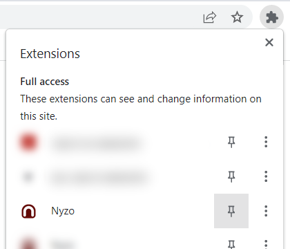
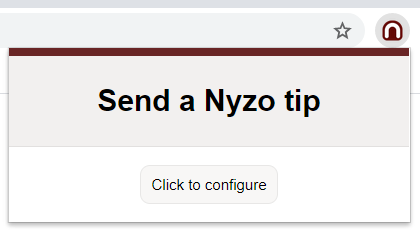
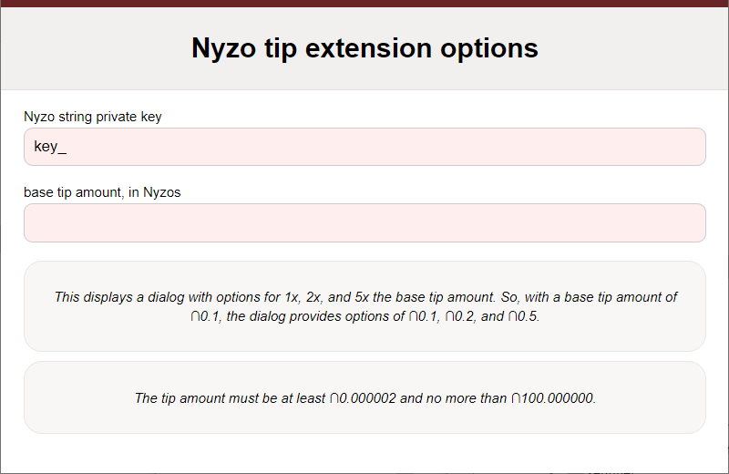
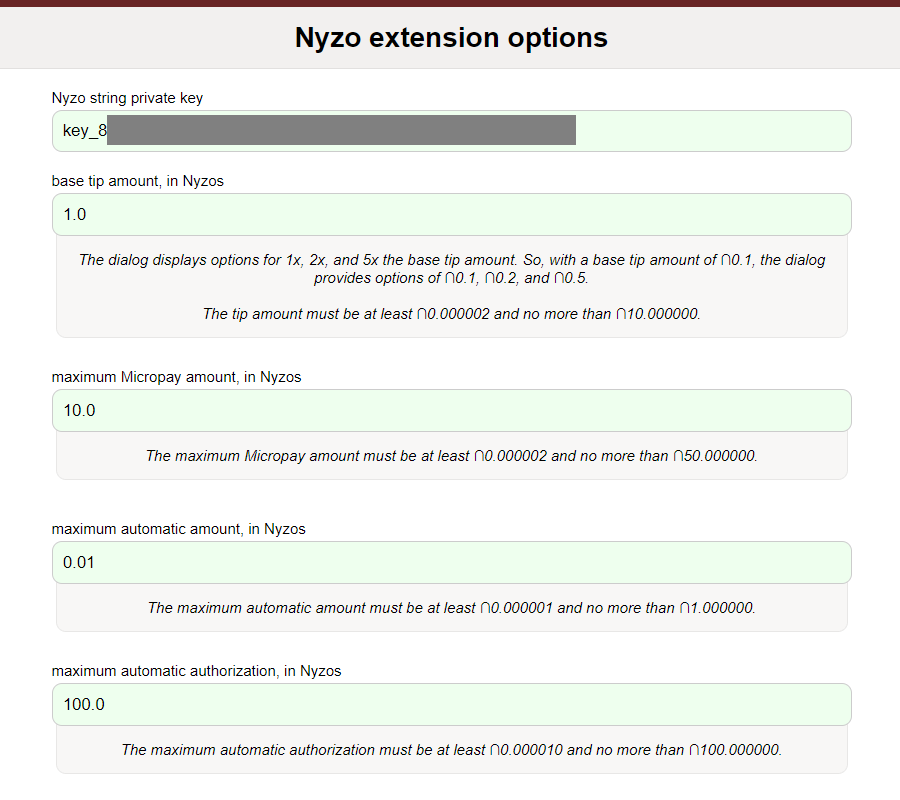
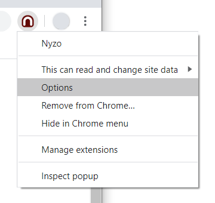
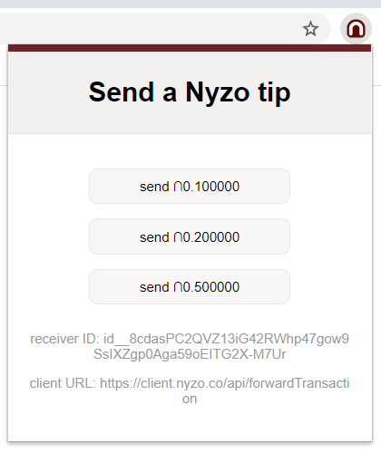
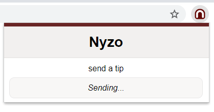

The Chrome browser extension is available in a separate repository, not the shared codebase used for the verifier, sentinel, client, and documentation server.
We recommend using a separate account for the extension. Keep a small amount of coins in that account. If your key used for the extension is compromised, this will minimize your losses.
For a line-by-line explanation of how the extension works, please read the release notes:
After installing the extension, be sure it is pinned to your Chrome toolbar for easy access.
When pinned, a Nyzo icon will appear in the top toolbar of Chrome. When you click on the extension for the first time, a button will be displayed requesting configuration.
The options page requires a private key, base tip, maximum Micropay amount (for purchased content), maximum per-transaction automatic amount (for applications and gaming), and maximum automatic authorization. The automatic authorization is the amount that you will pre-authorize per receiver account for automatic transactions to be sent later. The private key is stored in local, unencrypted storage. Use an expendable, low-value account to minimize losses in case of compromise.
When you have entered valid values, the field backgrounds change from red to green. The values are stored automatically as you enter them.
If you ever want to revisit this menu to change any settings, right-click on the extension icon and select Options.
Now, on any page that accepts Nyzo tips, buttons appear to allow you to easily send amounts of 1x, 2x, and 5x the base tip amount you entered.
When you click on a tip button, the popup will indicate that the tip is being sent. This should show only briefly.
A confirmation lets you know that the tip was received, forwarded to the cycle, and scheduled for inclusion in the blockchain. If there are any errors or warnings, they are displayed here.

When the extension is loaded, it looks for elements with the CSS class nyzo-tip-button. The extension retrieves the data-client-url, data-receiver-id, and data-tag attributes from the elements it finds.
The data-client-url attribute lets the extension know where the tip transaction should be sent. This attribute is required.
The data-receiver-id attribute designates the receiver of the tip transactions. This attribute is required.
The data-tag attribute is included in the sender data field of transactions, and it allows the operator of the site to track the source of tip transactions. The tag may be up to 7 characters, and it may include ASCII letters, numbers, and the underscore. Disallowed characters are filtered, and excess characters are truncated. This attribute is optional.
The nyzo-extension-not-installed CSS class is removed from all nyzo-tip-button elements, and the nyzo-extension-installed CSS class is added.
The page has no responsibility to respond to these CSS class changes or even to display the element at all. The following button displays different images depending on whether the extension is installed. CSS can be used to automatically change the appearance of elements, and the class list of the element can be examined in JavaScript (<element>.classList.contains('nyzo-extension-installed')) to provide different behavior.
When the button above is tapped, this paragraph will display whether the extension is installed. Similar logic could be used to send users without the extension to an install page.